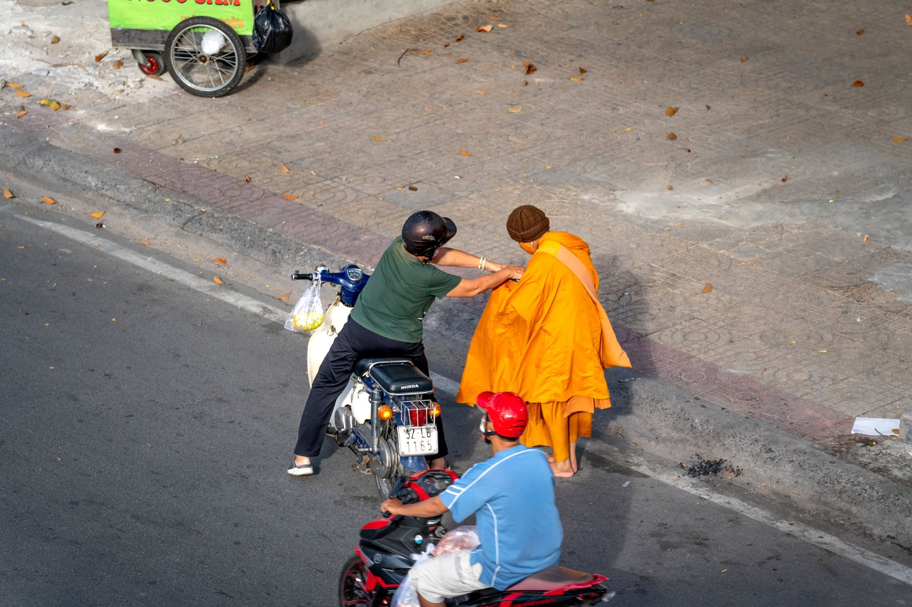
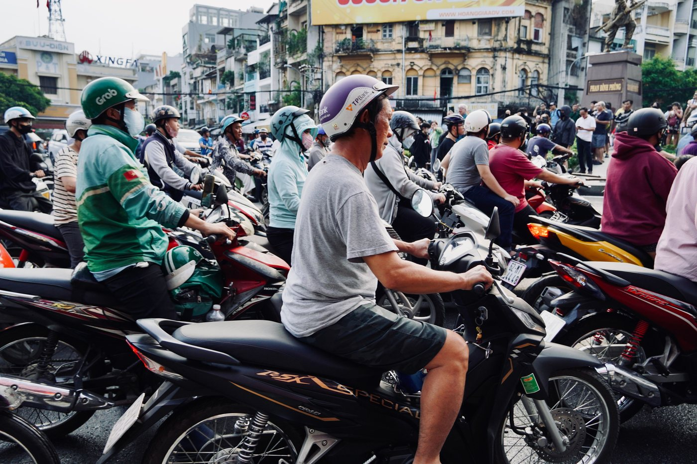
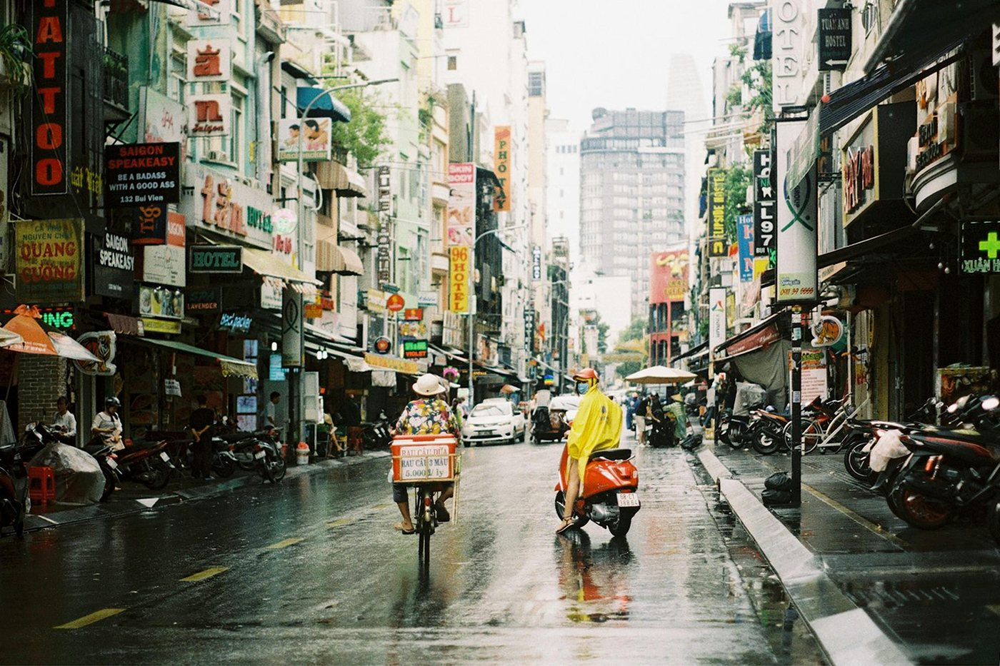

ДТП на байке во Вьетнаме: что делать по шагам

Мелкое столкновение в плотном потоке — самая частая неприятность на байке. Чаще всего это задетое зеркало, поцарапанный пластик или падение на низкой скорости. Паника и попытка «просто уехать» превращают бытовую ситуацию в серьёзное нарушение, поэтому порядок действий стоит знать заранее, а не вспоминать на асфальте.
1. Остановиться. Это не совет, а требование закона
По вьетнамским правилам участник ДТП обязан немедленно остановить транспорт, сохранить место происшествия, помочь пострадавшему, остаться на месте или сразу сообщить в органы. За нарушение этого пункта для водителя мотоцикла или мопеда в постановлении № 168/2024/NĐ-CP (действует с 1 января 2025 года) предусмотрен штраф 8 000 000 – 10 000 000 ₫ и списание баллов с водительского удостоверения.
Отдельно про 50cc: система баллов привязана к удостоверению, и если прав у вас нет, списывать баллы не с чего — но денежная часть штрафа платится полностью. То есть «уехал и забыл» в самом плохом варианте стоит дороже, чем весь байк. Если в ДТП пострадал человек, речь уже не об административном штрафе, а о более тяжёлой ответственности.
2. Обезопасить место
Первые секунды нужны не на разговоры, а на то, чтобы вас не сбили второй раз:
- включите аварийку или, если её нет, оставьте включённым свет;
- уберите байк с полосы движения, если он лежит в потоке и есть пострадавшие или риск наезда;
- если пострадавших нет и движение позволяет — лучше ничего не перемещать, а встать рядом, обозначив место;
- шлем не снимайте сразу, если ударились головой.
3. Телефоны
Три номера, которые стоит держать в заметках, потому что в момент стресса их не вспомнить:
- 113 — полиция;
- 115 — скорая помощь;
- 114 — пожарные и спасатели.
Звонок будет на вьетнамском. Если языка нет, попросите помочь любого прохожего — на улице почти всегда кто-то откликается — или сразу передайте телефон местному. Полезно заранее записать адрес жилья по-вьетнамски: это ускоряет любой разговор.

4. Что зафиксировать на телефон
Фотографии — ваш единственный аргумент через час, когда машины уедут, а версии разойдутся. Снимайте до того, как что-то передвинули:
- общий план с двух направлений, чтобы было видно полосы и светофор;
- положение обоих транспортных средств;
- повреждения своего байка и второго участника крупно;
- госномера обеих машин;
- тормозной путь, разлитое масло, мусор на дороге, если он повлиял;
- документы второго участника — Blue Card и права, если он даёт их сфотографировать.
Дополнительно возьмите телефон одного-двух свидетелей. Видео с обзором места по кругу лучше десяти отдельных кадров.
5. Если ДТП без пострадавших
Мелкие контакты во Вьетнаме чаще решают на месте: стороны оценивают ущерб и договариваются о компенсации без вызова полиции. Это законная практика, если оба согласны и никто не травмирован. Несколько ориентиров:
- не признавайте вину сразу «чтобы отпустили» — сначала посмотрите, что действительно повреждено;
- суммы обсуждают по факту ремонта, а не «на глаз»: разумно вместе доехать до мастерской и спросить цену;
- если согласия нет — вызывайте полицию, а не повышайте голос;
- деньги передавайте после фотофиксации и желательно при свидетеле.
6. Если есть пострадавший
Оказать помощь — обязанность, а не выбор. Вызовите 115, не перемещайте человека без необходимости (особенно при травме головы, шеи или спины), останьтесь до приезда служб. Уехать с места, где пострадал человек, — это худшее из возможных решений и по закону, и по последствиям.

7. После: байк, здоровье, страховка
Даже если кажется, что всё цело, проверьте руль на симметрию, вилку, ход тормозов и колесо на восьмёрку — после падения это самые частые скрытые повреждения. Порядок осмотра расписан в статье что делать, если байк упал.
Про медицину: обращайтесь в клинику, а не «отлежаться» — ссадины во влажном климате воспаляются быстро. И заранее разберитесь, что покрывает ваша страховка: обязательная страховка байка и ваша туристическая медицинская — это разные вещи, и вторая часто исключает управление транспортом без нужной категории прав. Подробнее — про страховку на байк 50сс.
Что снижает риск заранее
Почти все мелкие ДТП разбираются на три причины: скорость в потоке, слепые зоны у поворота и техника, которая не тормозит как надо. Полезно прочитать как правильно тормозить, как проезжать перекрёстки и делать двухминутную проверку перед выездом.
Короткий вывод
Остановиться, обезопасить место, вызвать помощь при пострадавших, снять всё на телефон и договариваться спокойно. Оставление места ДТП обойдётся дороже любого ремонта: по постановлению № 168/2024 это 8–10 млн ₫ для байка. Исправная техника и понятные документы уменьшают количество таких ситуаций — как устроена покупка у нас.